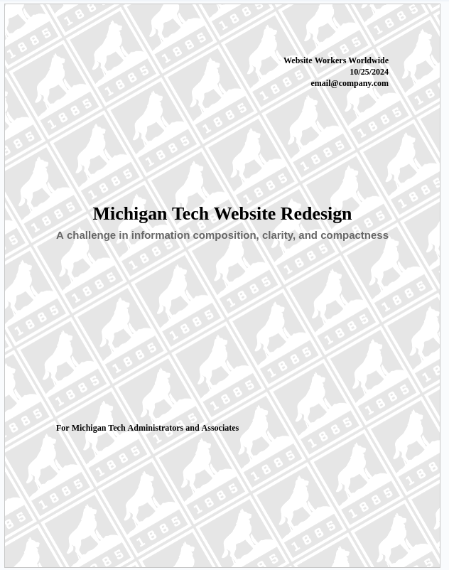
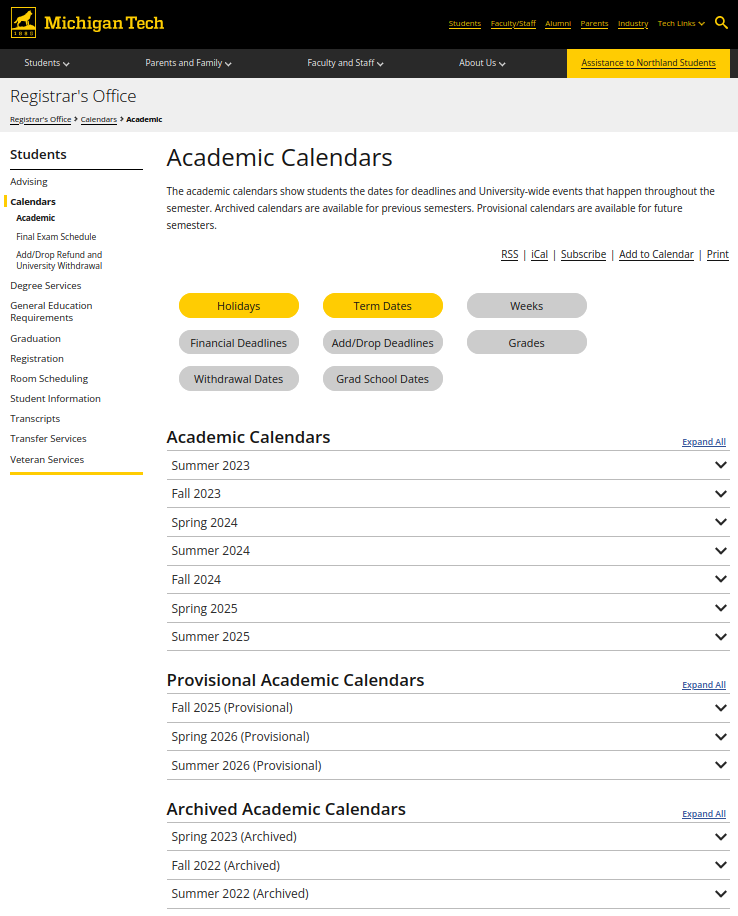
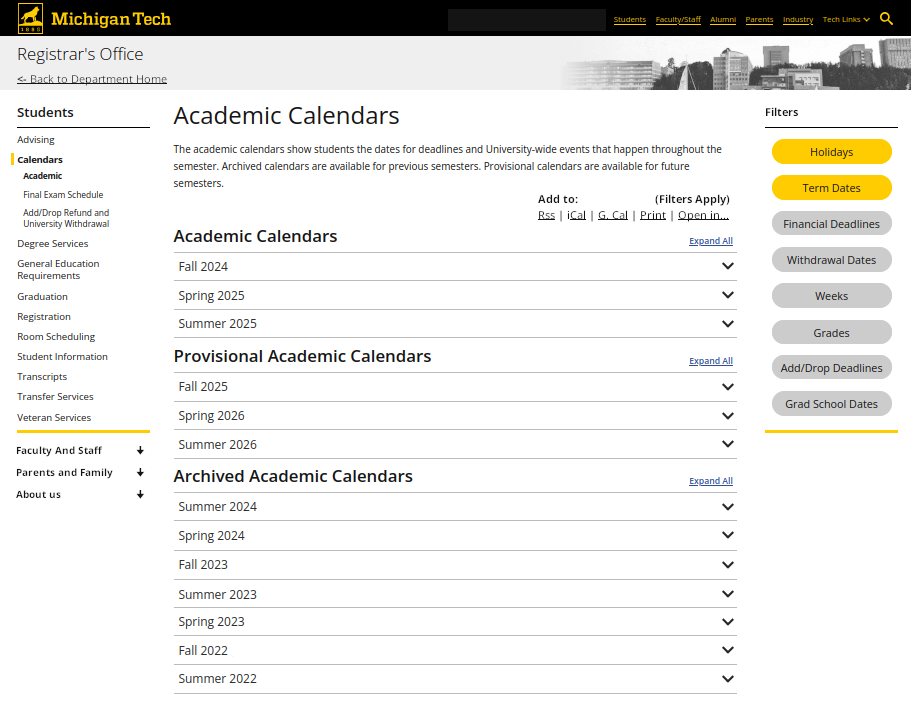

Reflection 1 (10/11/2024)
This website has probably been the most effort I've put into an assignment in a few weeks,
besides Algos maybe. But it is nice to be finally working on a project of my own,
especially one that involves some actual "making of things". Maybe ITOxygen will
provide the same type of enjoyment when the project I'm working on over there
begins to ramp up some more now that we have finished the initial research stage.
In the meantime this project should make me better at writing websites from scratch
no toolkits, fancy JavaScript libraries, nada. Yes, doing this in a very minimal style
prevents me from using a bunch of fancy formatting and animations, but honestly? I
prefer not having them, I want websites to be to-the-point, dense, and fast loading.
I'm just not a fan of websites being all filler with rounded corners, blur shaders,
and a million sliding and fading animations just to show me 20 words of text per
every 5 miles of scrolling (oh and it always takes forever to load too).
Reflection 2 (10/28/2024)
These past few days I've been working on writing a mock formal proposal document as an in class
assignment. The proposal is to redesign Michigan tech's main pages, both in format and content
to make information easier to find, more dense, and laid out in ways that are far more intuitive to
end users. It's actually a pretty good learning experience, as it has helped me learn how these types
of documents are formatted and written, both aesthetically and functionally. During this, I also
learned how to use Google Doc's watermark feature to sort of "hack" a background image onto the title
page of my report.

Reflection 3 (11/22/2024)
I think it's worth going back to that website proposal since I've done some more work on it. Again,
it's not something I'm particularly proud of, but I am Passionate about effective web design,
despite not being a very good artist. In the final iteration of the document I added a mockup
made in GIMP to show how a better layout would work for the MTU calendars page. I think
it came out quite nice, despite being a little rough around the edges aesthetically. I've
attatched a comparison below to show the difference between my version (first) and the original (second image).

